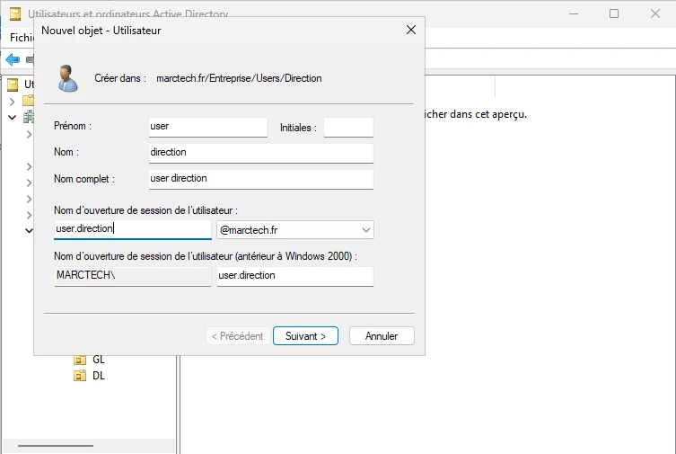
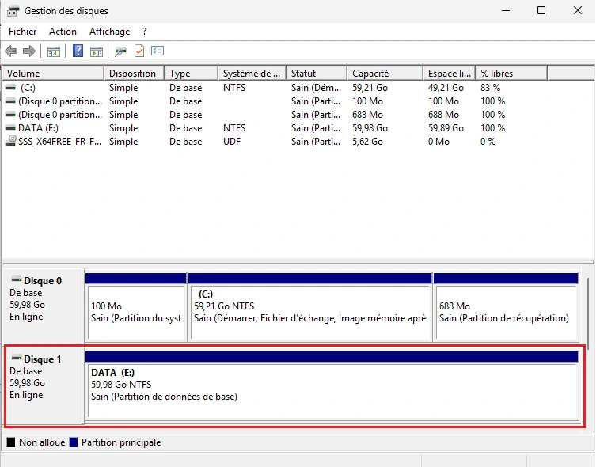
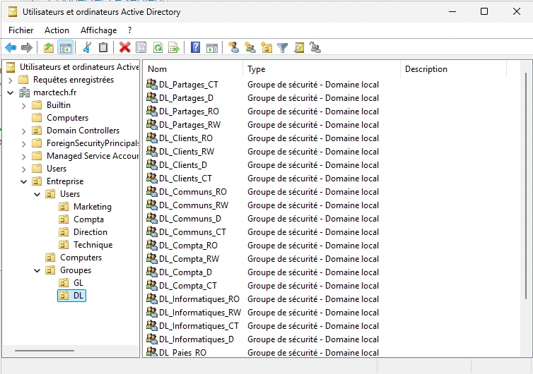
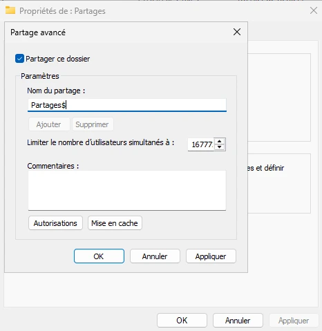
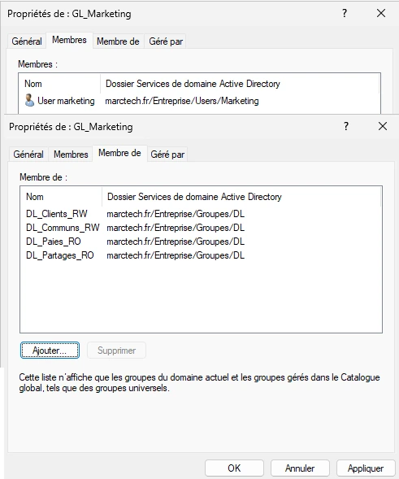
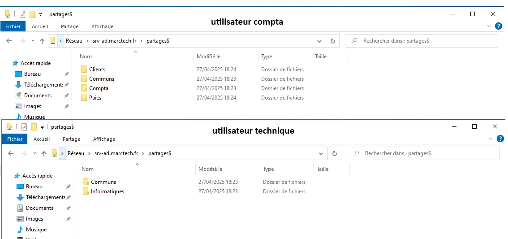

Projet : Mise en place Active Directory avec AGDLP
Pourquoi utiliser AGDLP dans Active Directory ?
Lorsqu'une entreprise utilise un Active Directory sans organisation précise, la gestion des accès aux ressources devient rapidement complexe et risquée. En attribuant des droits directement aux utilisateurs sur les dossiers ou ressources, on se retrouve avec :
- Une mauvaise visibilité sur qui a accès à quoi,
- Un risque élevé d'erreurs humaines lors des changements d'équipe,
- Un effort administratif énorme pour déplacer un utilisateur d'un service à un autre,
- Une architecture difficile à maintenir à long terme, notamment lors d'audits de sécurité.
Pour résoudre ces problèmes, Microsoft recommande d'utiliser une méthode structurée appelée AGDLP, qui est un standard d'organisation des droits dans un Active Directory.
Que signifie AGDLP ?
- A - Accounts : Les comptes utilisateurs individuels créés dans Active Directory.
- G - Global Groups : Les utilisateurs sont regroupés par métier ou fonction dans des Groupes Globaux (ex : Marketing, Technique, Comptabilité).
- DL - Domain Local Groups : Ces Groupes Locaux de Domaine sont liés aux ressources (dossiers partagés, imprimantes) et reçoivent les permissions directement.
- P - Permissions : Les droits d'accès sont attribués uniquement aux Groupes Locaux, jamais directement aux utilisateurs ou aux Groupes Globaux.
Pourquoi mettre en place AGDLP ?
Le modèle AGDLP permet d’atteindre plusieurs objectifs critiques en entreprise :
- Sécurité : Limiter l'attribution directe des permissions garantit que seuls les bons groupes peuvent accéder aux ressources.
- Simplicité : Pour donner ou retirer un accès, il suffit d'ajouter ou retirer un utilisateur d'un Groupe Global, sans toucher aux permissions NTFS directement.
- Maintenabilité : Lors de restructurations, de départs ou d'arrivées d'employés, les modifications sont rapides et sûres.
- Auditabilité : En cas d'audit de sécurité, il est plus facile de prouver qui a accès à quoi via l'analyse des groupes.
- Scalabilité : Cette approche fonctionne aussi bien dans les petites structures que dans les grandes entreprises multi-sites.
Exemple structure sans AGDLP :
Dans une entreprise sans AGDLP, un utilisateur aurait reçu directement des droits sur plusieurs dossiers. À son départ ou à son changement de poste, il faudrait retrouver manuellement toutes les permissions attribuées, ce qui est long, dangereux et source d'oublis.
Exemple structure avec AGDLP :
L'utilisateur appartient à un Groupe Global lié à son métier. Ce groupe est membre d'un Groupe Local qui possède les permissions sur les ressources. En cas de changement, il suffit simplement de retirer l'utilisateur du groupe Global : il perd automatiquement tous ses accès de manière propre et contrôlée.
Ce projet a donc pour but de mettre en place une infrastructure Active Directory respectant le modèle AGDLP, afin d'assurer une gestion optimale, sécurisée et évolutive des ressources de l'entreprise.
Présentation générale du projet
J'ai construit une infrastructure complète Active Directory sous VMware. L'objectif était de mettre en œuvre une organisation professionnelle utilisant la méthode AGDLP pour sécuriser les ressources réseau.
1. Installation et configuration réseau
Après l'installation des systèmes Windows Server 2025 pour l'AD et Windows 10 comme client, j'ai configuré les adresses IP fixes, la passerelle, et défini le serveur lui-même comme serveur DNS pour l'ensemble du domaine.
2. Installation de l'Active Directory et promotion du serveur
Après avoir installé Windows Server, j'ai ajouté le rôle Active Directory Domain Services (AD DS). Lors de cette étape, j'ai également installé le rôle DNS Server car un domaine Active Directory nécessite impérativement un serveur DNS interne pour fonctionner correctement.
J'ai ensuite promu le serveur en tant que Contrôleur de Domaine pour créer le domaine marctech.fr. Pour assurer la résolution des noms internes au domaine, j'ai configuré l'adresse IP du serveur lui-même comme serveur DNS principal, aussi bien sur le serveur que sur les futurs postes clients.
En effet, Active Directory s'appuie sur son propre serveur DNS pour :
- Permettre aux postes clients de localiser le contrôleur de domaine via des enregistrements spécifiques (SRV),
- Gérer les services critiques d'authentification comme LDAP et Kerberos,
- Garantir la bonne réplication entre contrôleurs de domaine (dans un environnement multi-DC),
- Éviter toute dépendance à un DNS externe qui ne connaîtrait pas l'existence du domaine interne (marctech.fr).
Le fait que le serveur Active Directory agisse également comme serveur DNS permet donc de rendre l'infrastructure totalement autonome, fiable et sécurisée. Cela est indispensable pour garantir le bon fonctionnement du domaine, des connexions utilisateurs et des stratégies de groupe (GPO).
Voir l'installation AD

3. Création des OU et des utilisateurs
J'ai organisé Active Directory en créant plusieurs OU (Unité d'Organisation) par service et ajouté les utilisateurs correspondants dans chaque service.
Voir la création des utilisateurs
4. Ajout d'un disque supplémentaire pour les partages
Afin de respecter les bonnes pratiques d'administration système, j'ai ajouté un second disque dur sur le serveur. L'objectif est d'éviter d'utiliser le disque système C: pour héberger les ressources partagées, afin de :
- Préserver les performances du système d'exploitation,
- Éviter un risque de saturation du disque système en cas de croissance des données utilisateurs,
- Faciliter les opérations de sauvegarde et de restauration (le volume de données est séparé du système),
- Améliorer la gestion et l'organisation du stockage.
Sur ce second disque (E:), j'ai créé un dossier principal sécurisé nommé Partages, destiné à regrouper l'ensemble des dossiers de service (Marketing, Compta, Technique, etc.).
Voir la gestion du disque
5. Création des Groupes (GL et DL)
J'ai créé des Groupes Globaux pour chaque service et des Groupes Locaux pour attribuer les permissions sur les ressources partagées.
Voir la création des groupes GL et DL
6. Mise en place des partages réseau
Afin de sécuriser et d'organiser les ressources partagées, j'ai configuré des partages avancés sur le second disque. J'ai créé un dossier principal nommé Partages$.
Le signe $ à la fin du nom du dossier signifie que le partage est caché : il n'apparaît pas dans la liste des partages réseau visibles par défaut. Pour y accéder, il est nécessaire de connaître et de saisir directement le chemin complet dans l'explorateur, par exemple \\nom-du-serveur\Partages$.
Cette technique améliore la confidentialité des partages en empêchant les utilisateurs de naviguer librement dans les ressources réseau sans autorisation.
Voir la configuration du partage
7. Attribution des droits NTFS
Les permissions sur les dossiers partagés ont été appliquées exclusivement aux Groupes Locaux, respectant les meilleures pratiques AGDLP.
Voir l'attribution des droits
8. Tests utilisateurs et validation
En testant les connexions avec différents utilisateurs, j'ai validé que chacun ne voyait que les ressources autorisées selon son service, confirmant la bonne application de la méthode AGDLP.
Voir les tests utilisateurs
Conclusion
Ce projet m'a permis de mettre en œuvre une infrastructure sécurisée et évolutive basée sur Active Directory. La méthode AGDLP apporte une réelle simplification de la gestion des accès tout en respectant les standards professionnels de sécurité réseau.